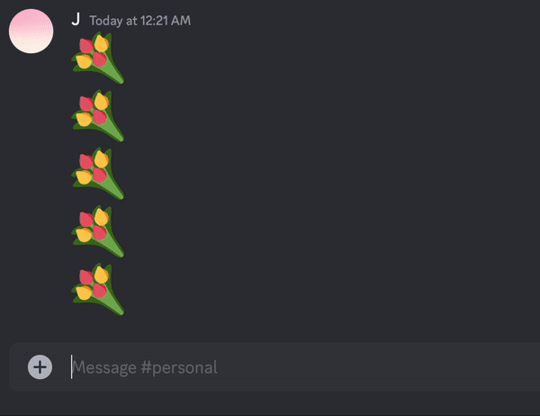
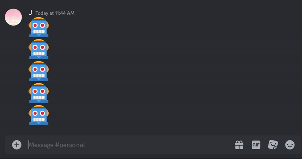
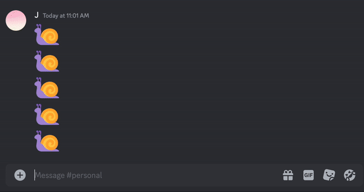
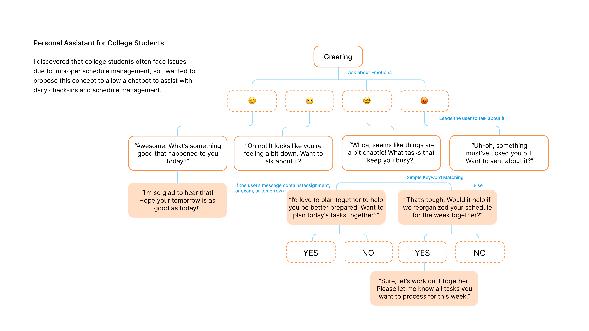

Chat Bot Process Book
Step 1 – Set Up
In my first attempt, I learned how to create a button in Python and make it clickable. By setting 'intents.message_content = True', the bot is enabled to receive message content. Use 'button_callback' to send a message based on the click.
A notable point: Although I'm still unfamiliar with Python, I've realized its strictness regarding formatting. Unlike JavaScript, which uses semicolons for segmentation, Python's indentation is very important.

import os
import discord
from discord.ui import View
intents = discord.Intents.default()
intents.message_content = True
client = discord.Client(intents=intents)
class MyCustomView(View):
def **init**(self):
super().**init**()
@discord.ui.button(label="Click me!")
async def button_callback(self, interaction, button):
await interaction.response.send_message("Happy Birthday, Leo🎂🎉💗")
@discord.ui.button(label="Make a Wish!")
async def button_callback2(self, interaction, button):
await interaction.response.send_message("You will be Healthy, Smart, Handsome, and Lucky as always!")
@client.event
async def on_ready():
print("Bot is ready!")
@client.event
async def on_message(message):
if message.author == client.user:
return
if client.user in message.mentions:
ourview = MyCustomView()
await message.channel.send("Thanks for mentioning me!", view=ourview)
if message.content.startswith("Hi Friend"):
ourview = MyCustomView()
await message.channel.send("Hi Leo⛷️", view=ourview)
my_secret = os.environ['DISCORD_BOT_SECRET']
client.run(my_secret)
Step 2 – Embed emoji in a button & delay the button response
After understanding the basics of buttons, I started experimenting with different UI styles. I wanted to create a response delay similar to the sloth "Flash" from Zootopia, where it doesn't respond immediately after people click but rather 20 seconds later. I had several friends try it out, and since we're accustomed to fast information exchange, they all found it strange and pressed the button many times in succession, which was similar to the reaction I envisioned.
@discord.ui.button(label="", style=discord.ButtonStyle.secondary, emoji='🦥')
async def buttonCallback5(self, interaction, button):
await interaction.response.defer()
# Acknowledge the interaction first to prevent a timeout
await asyncio.sleep(20)
await interaction.followup.send("I am Flash")
# Send the message after the delay
Step 3 – Extended Function–"Truth or Dare"
Then I explored more uses for this interaction. I created a chat bot for "Truth or Dare" with a button to randomly pick between "Truth" or "Dare" and then generate questions accordingly.

import os
import discord
import random
from discord.ext import commands
from discord.ui import View, Button
intents = discord.Intents.default()
intents.message_content = True
bot = commands.Bot(command_prefix="", intents=intents)
truth_questions = [
"Who do you like best - Kris, Kourtney, Kim, Khloé, Kendall or Kylie?",
"What's your worst fashion moment?",
"What's the most embarrassing thing you've ever done?",
"Do you believe in aliens?", "What is a weird food that you love?",
"What’s the most surprising thing your bag right now?",
"What's one thing you wish you'd lied about?",
"Who is your weird celebrity crush?",
"What was your biggest childhood fear?"
]
dare_questions = [
"Do 100 squats.", "Show us your screen time report.",
"Eat a snack without using your hands.",
"Whisper a secret to the person on your left.",
"Say yes to everything for the next 1 minute.",
"Give everyone in the room a backhanded compliment.",
"Say a secret about someone in the room but not reveal their name.",
"Talk in a British accent for the next 10 minutes."
]
class TruthOrDareView(discord.ui.View):
@discord.ui.button(label="Truth", style=discord.ButtonStyle.green)
async def truth_button(self, interaction: discord.Interaction,
button: discord.ui.Button):
question = random.choice(truth_questions)
await interaction.response.send_message(f"Truth: {question}")
@discord.ui.button(label="Dare", style=discord.ButtonStyle.red)
async def dare_button(self, interaction: discord.Interaction,
button: discord.ui.Button):
question = random.choice(dare_questions)
await interaction.response.send_message(f"Dare: {question}")
@bot.command(name="MyTurn")
async def play_truth_or_dare(ctx):
"""Starts a game of Truth or Dare."""
view = TruthOrDareView()
await ctx.send("Press a button to pick Truth or Dare!", view=view)
my_secret = os.environ['DISCORD_BOT_SECRET']
bot.run(my_secret)
Step 4 – Set Up
Initially, I thought about using predetermined replies to guide the process of pulling up the calendar and helping them arrange it together. However, I decided to give it more empathetic characteristics.
I resolved to make replies more relevant based on the user's replies, and after some research, I found out that this could be achieved by using an NLP library. I read about the principles of Tokenization but felt it was too advanced for my current skills. So, I searched for tutorials to create a keywords list and use Simple Keyword Matching to implement more relevant responses while also making it have a more patient tone.


import discord
from discord.ext import commands
from discord.ui import View, Button
import os
my_secret = os.getenv('DISCORD_BOT_SECRET')
# Bot Setup
intents = discord.Intents.default()
intents.message_content = True
bot = commands.Bot(command_prefix="!", intents=intents)
# Define the PlanningView class
class PlanningView(View):
def __init__(self):
super().__init__()
self.add_item(PlanningButton("Yes", "yes"))
self.add_item(PlanningButton("No", "no"))
class PlanningButton(Button):
def __init__(self, label, custom_id):
super().__init__(label=label, style=discord.ButtonStyle.primary, custom_id=custom_id)
async def callback(self, interaction):
if self.custom_id == "yes":
await interaction.response.send_message("Sure, let’s work on it together! Please let me know all tasks you want to process for this week.")
else:
await interaction.response.send_message("Alright, if you change your mind or need to organize something later, just let me know!")
# Create Emoji Button View
class EmojiView(View):
def __init__(self):
super().__init__()
self.add_item(EmojiButton('😊', 'smiley'))
self.add_item(EmojiButton('🥺', 'pleading'))
self.add_item(EmojiButton('😵💫', 'dizzy'))
self.add_item(EmojiButton('😡', 'angry'))
class EmojiButton(Button):
def __init__(self, emoji, custom_id):
super().__init__(style=discord.ButtonStyle.primary, emoji=emoji, custom_id=custom_id)
async def callback(self, interaction):
response_messages = {
'smiley': "Awesome! What's something good that happened to you today?",
'pleading': "Oh no! It looks like you're feeling a bit down. Want to talk about it?",
'dizzy': "Whoa, seems like things are a bit chaotic! Got a story to share?",
'angry': "Uh-oh, something must've ticked you off. Want to vent about it?"
}
await interaction.response.send_message(response_messages[self.custom_id])
if self.custom_id == 'dizzy':
# Wait for the user's response after "dizzy" reaction
def check(m):
return m.author == interaction.user and m.channel == interaction.channel
message = await bot.wait_for('message', check=check)
keywords = ['assignment', 'exam', 'tomorrow']
if any(keyword in message.content.lower() for keyword in keywords):
response = "I'd love to plan together to help you be better prepared. Want to plan today's tasks together?"
else:
response = "Would it help if we reorganized your schedule for the week together?"
await interaction.followup.send(response, view=PlanningView())
@bot.event
async def on_ready():
print(f'We have logged in as {bot.user}')
@bot.event
async def on_message(message):
if message.author == bot.user:
return
if message.content.startswith("Hi, Kit"):
view = EmojiView()
await message.channel.send("Hi there! How's it going today?", view=view)
await bot.process_commands(message)
bot.run(my_secret)